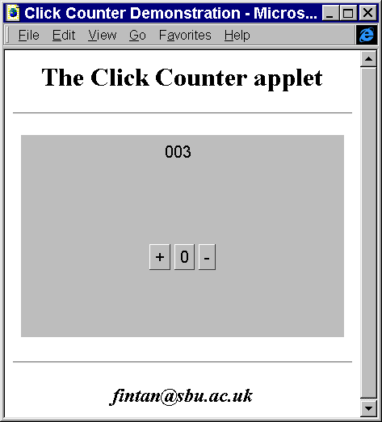

In its current state of development the ClickCounter can only be executed as an applet. In order for this to happen it will have to be hyperlinked within a HTML document which is accessed from a Java enabled browser or an appletviewer utility. A very minimal HTML file to accomplish this might be as follows.
<HTML>
<HEAD>
<!-- Minimal HTML document to execute the -->
<!-- ClickCounterTranslation applet. Written for the Java -->
<!-- interface book Chapter 1 - see text. -->
<!-- -->
<!-- Fintan Culwin, v 0.2, August 1997. -->
<TITLE>Click Counter test</TITLE>
</HEAD>
<BODY>
<CENTER>
<H1>
The Java Click Counter Applet
</H1>
<P>
<HR>
<APPLET CODE="ClickCounterTranslation.class"
WIDTH = 400
HEIGHT = 250
</APPLET>
<HR>
<P>
<I>fintan@sbu.ac.uk</I>
</CENTER>
</BODY>
</HTML>
The <APPLET> tag in a HTML document indicates that a Java applet is to be retrieved from the server which supplied the document and executed. The CODE parameter to the <APPLET> tag identifies the applet, which in this simple example is assumed to be present in the same directory on the server as the HTML document. More details of HTML authoring and the use of the <APPLET> tag can be found in the references in Appendix A. The appearance of the ClickCounter applet when it is being executed by Microsoft's Internet Explorer is illustrated in Figure 1.14.

Figure 1.14 The ClickCounter applet executing within Internet Explorer.